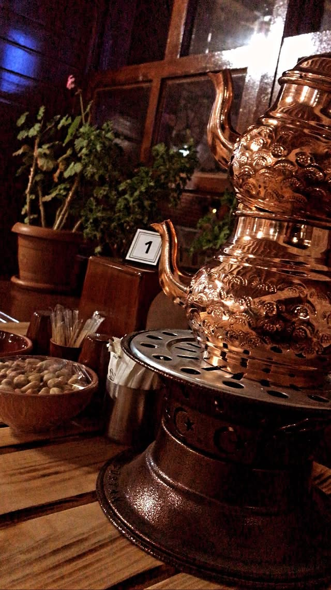
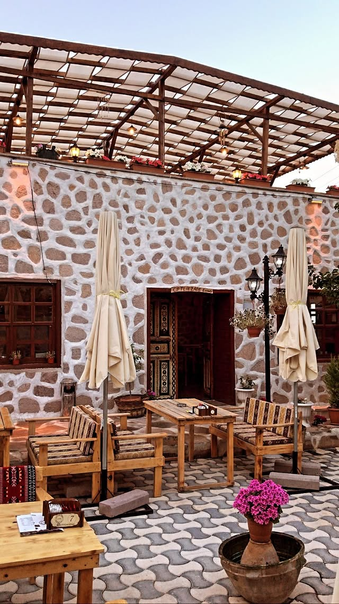
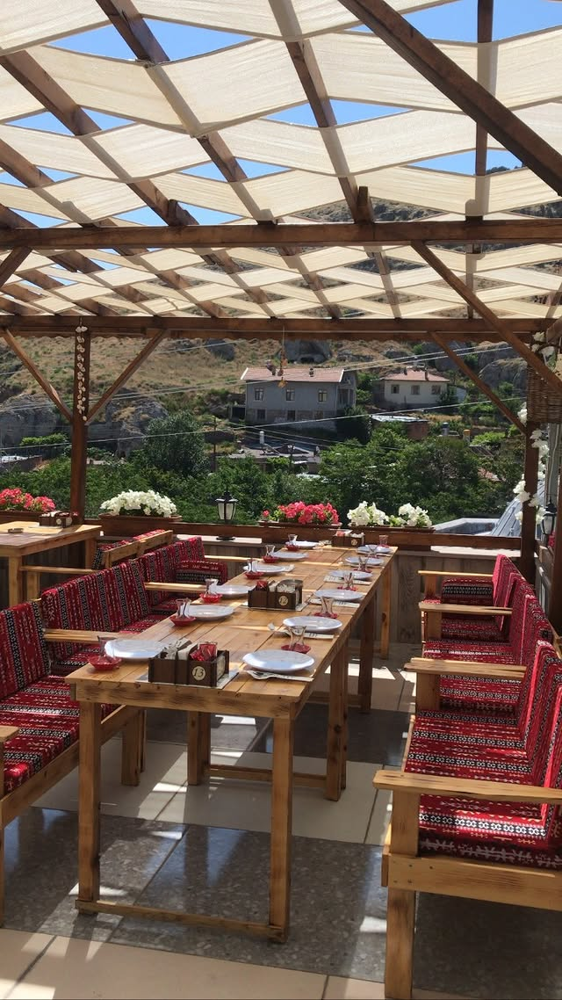
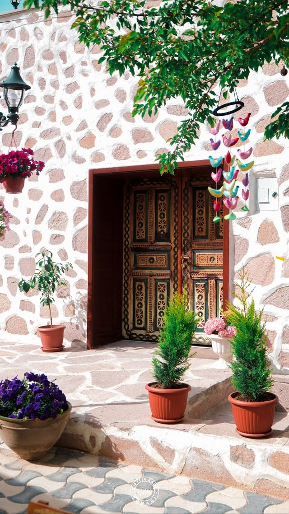

KONAĞIMIZDAN KARELER
Fotoğraf Galerisi
Sille'nin kalbindeki konağımızın bahçesinden, sıcacık iç mekanından ve detaylarından görseller.

zoom_in
Konağımızın Dış Cephesi
İç Mekan / Yapı
zoom_in
Kuzineli Soba
İç Mekan
zoom_in
Semaver & Çaydanlık Detayı
İç Mekan Detay
zoom_in
Geniş Bahçe Alanı
Bahçe
zoom_in
Bahçede Keyif Köşesi
Bahçe
zoom_in
Tarihi Konak Kapısı
Bahçe Detay